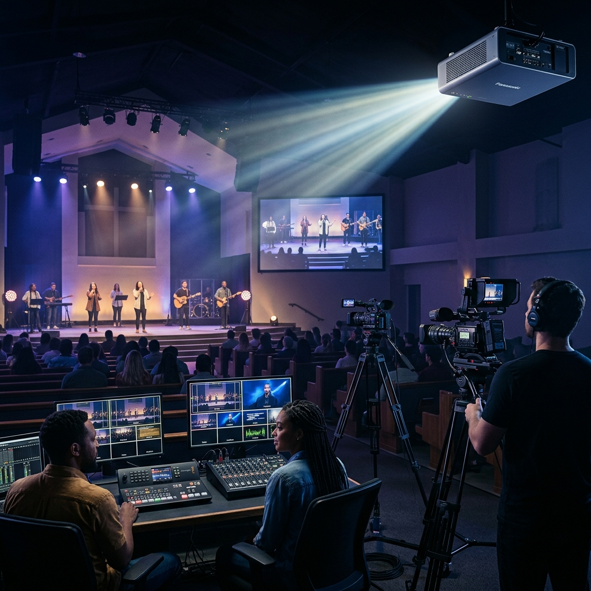

ACADEMIA DE CAÑON Y TRANSMISIÓN

Llevá el mensaje al mundo
La Academia de Cañon y Transmisión equipa a voluntarios para gestionar con excelencia la proyección visual y la transmisión en vivo de cada servicio. Formamos técnicos capaces de conectar a la congregación presencial y al mundo digital.
Nuestros Cursos
-
Operación de Cañon Proyector
Configuración, calibración y operación de proyectores: letras de canciones, presentaciones y contenido visual durante el servicio.
-
Transmisión en Vivo
Configuración de plataformas de streaming (YouTube, Facebook Live), manejo de encoders y monitoreo de calidad de señal en tiempo real.
-
Software de Presentación
Manejo de ProPresenter, EasyWorship y OBS Studio para crear, organizar y proyectar contenido con fluidez durante cada reunión.
-
Cámara y Dirección de Video
Técnica de encuadre, movimiento de cámara y switcher de video para producir transmisiones de alta calidad.